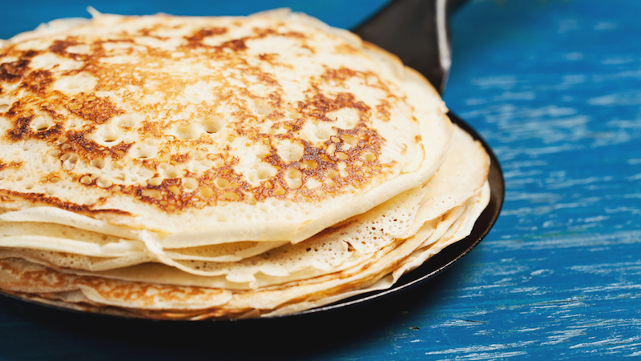

Pannkakor
Ingredienser (10 st)
- 3 dl vetemjöl
- ½ tsk salt
- 6 dl mjölk
- 3 ägg
- smör till stekning
Instruktioner
- Vispa samman mjöl och salt med hälften av mjölken.
- Tillsätt resten av mjölken och vispa till en helt slät smet.
- Vispa i äggen ett i taget.
- Hetta upp en stekpanna med lite smör. Häll i ett tunt lager smet. När ytan stelnat och blivit matt är det dags att vända pannkakan. Stek i ytterligare någon minut.
- Toppa med sylt och grädde.
Näringsvärden
- Energi: 312 kcal
- Protein: 15 g
- Kolhydrater: 40 g
- Fett: 10 g
Kommentarer
Johan
Jag tillsatte ett extra ägg så att smeten skulle hålla ihop bättre.
Frida
smarrigt
Emma
Tack för receptet, barnen älskade det.